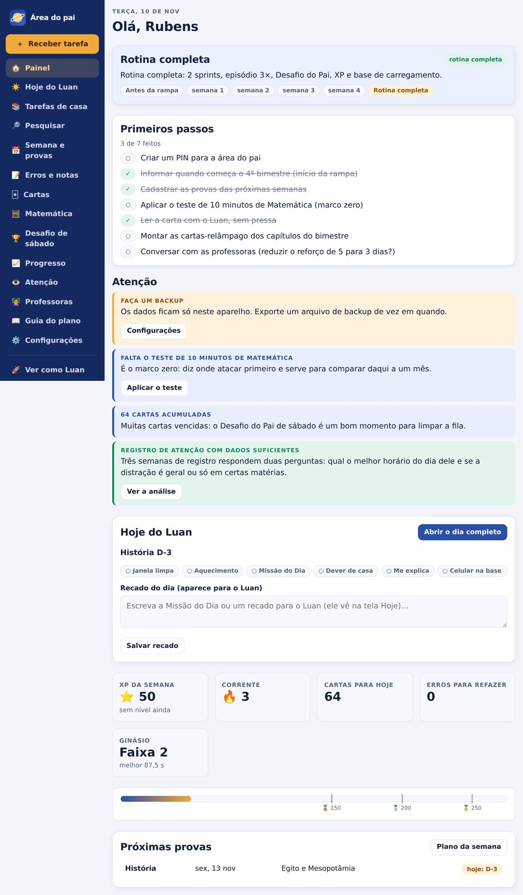
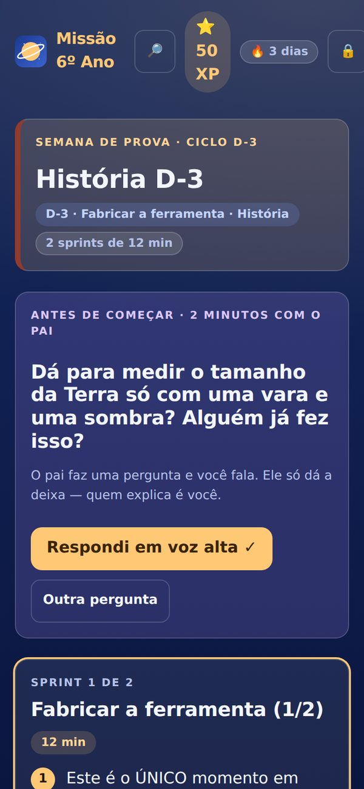
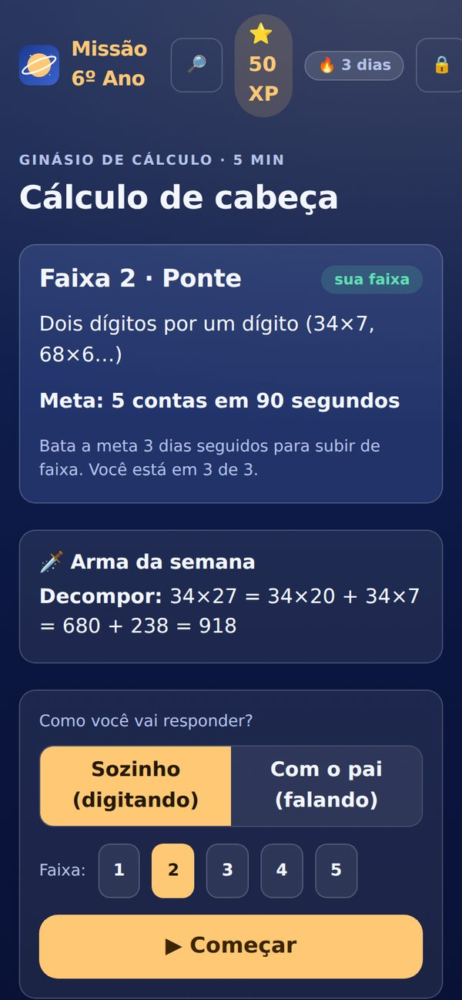
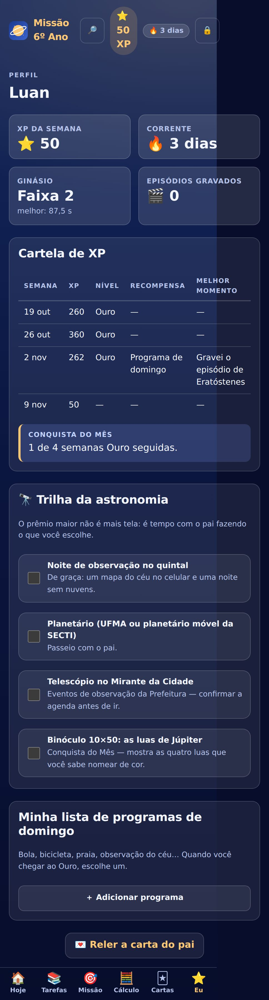
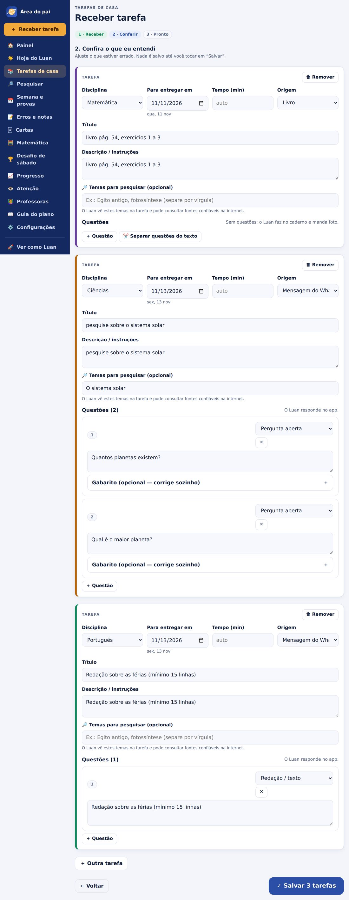
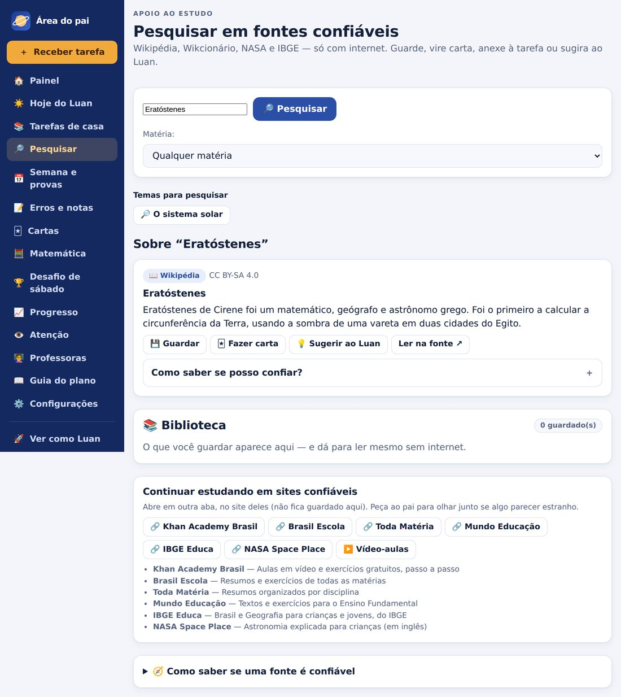
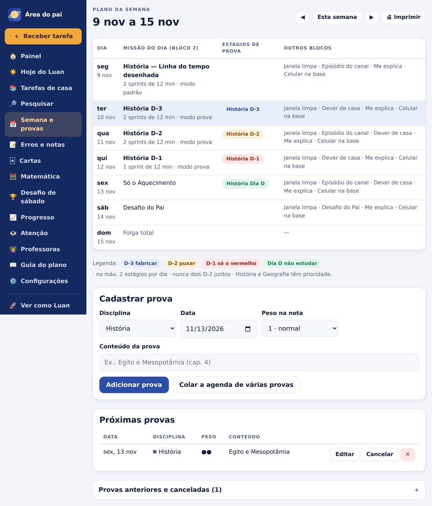
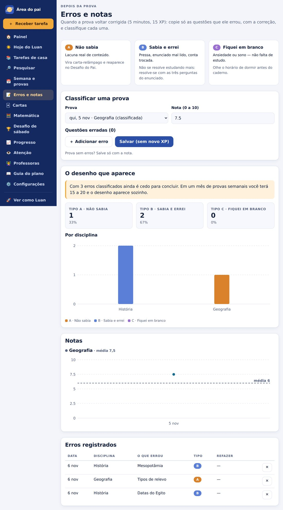
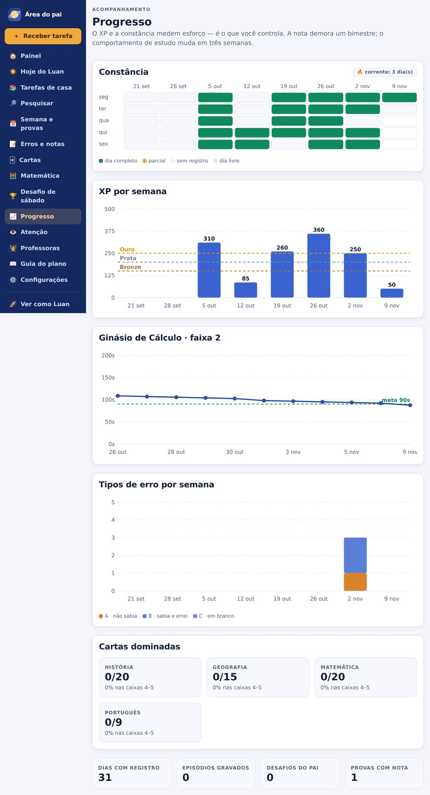
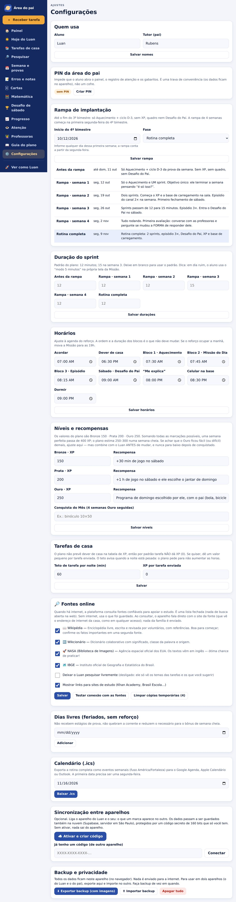

Manual de uso
Rotina de estudos, dever de casa e fontes online confiáveis
em um só aplicativo — no celular, no tablet ou no computador.
O Missão 6º Ano transforma o plano de estudos do Luan em um aplicativo. A ideia central é simples: poucos minutos, bem feitos, todos os dias — e o pai enxergando o que está acontecendo, sem precisar ser professor de tudo.
Telas grandes, um toque por passo. Mostra o que fazer agora: aquecimento, missão do dia, dever de casa, “me explica”. Ganha XP, sobe de nível e cuida da própria sequência de dias.
Para preparar a semana, receber as tarefas da escola, corrigir, ver gráficos e ajustar o rumo. Pode ter PIN para o Luan não entrar por engano.
| Bloco | O que é | Quanto |
|---|---|---|
| 1 · Aquecimento | Caligrafia + Ginásio de Cálculo (contas com cronômetro) | ≈ 10 min |
| 2 · Missão do Dia | Dois sprints de 12 minutos com pausa de 5. A matéria muda a cada dia (seg. História … sex. Português) ou segue o ciclo da prova | ≈ 30 min |
| 3 · Episódio | Gravar um minuto do canal de astronomia do Luan, explicando o que aprendeu | ≈ 10 min |
| 4 · Desafio do Pai | Sábado: quiz de revisão feito pelo pai, com cartas, erros e problemas | ≈ 20 min |
A noite tem o dever de casa (18h30), o “Me explica” (20h, cinco minutos explicando para o pai sem olhar o caderno) e o celular na base (20h30).

O aplicativo é um site comum. Para abrir no celular, ele precisa ficar em um endereço de internet:
Instalado, o aplicativo abre como um app qualquer, funciona sem internet e o navegador não apaga os dados por falta de uso.
A primeira tela tem dois botões: Sou o Luan e Sou o pai. O aparelho lembra a escolha. Na primeira abertura, o Luan lê uma carta do pai explicando a missão — leia junto com ele, sem pressa.
Na parte de baixo da tela do Luan há seis abas: Hoje · Tarefas · Missão · Cálculo · Cartas · Eu. No topo, 🔎 abre o Descobrir (capítulo 5) e 🔒 leva à área do pai.


Lista os blocos do dia na ordem. Cada um tem um botão: “Caligrafia ✓”, “Começar”, “Ver tarefas”, “Expliquei sem olhar”, “Celular na base ✓”. No alto, a barra da semana mostra o XP e quanto falta para Bronze (150), Prata (200) e Ouro (250). O recado que o pai escreve aparece aqui, e as próximas provas ficam no rodapé.
Os sprints do dia. Cada um tem cronômetro (o alarme toca mesmo se o Luan trocar de tela), passos da técnica da matéria e as regras: celular fora da mesa, sem interromper, pausa de 5 minutos. Se o dia estiver difícil, existe o modo 5 minutos: ele faz o mínimo e a sequência de dias não quebra.
Conforme o dia do ciclo, a missão traz uma ferramenta: fábrica de cartas (D-3), sessão de cartas (D-2), lista do vermelho (D-1), 5 problemas de Matemática, Caça ao detalhe de Português (leitura com perguntas) ou refazer erro.
Contas com teclado numérico e cronômetro, em 5 faixas de dificuldade. O app registra o tempo e só sobe de faixa quando a meta é batida 3 dias seguidos. Há o modo “com o pai”: o pai pergunta em voz alta e marca ✓ ou ✗.
Cartas-relâmpago com repetição espaçada (as que ele acerta voltam em 3, 7, 14, 30 dias; as que erra voltam amanhã). Regra: tentar lembrar antes de virar. O Luan também pode fabricar as próprias cartas — fabricar já é estudar.
Perfil do jogo: XP da semana, nível, sequência de dias, conquistas do mês, trilha da astronomia e o Quadro de Missões.

As tarefas chegam todos os dias no grupo de pais do WhatsApp, vindas das apostilas e dos livros. O aplicativo recebe a mensagem e as próprias questões — em texto, foto ou PDF.
Toque em ＋ Receber tarefa (botão amarelo, sempre visível no menu).

Em Tarefas de casa, abra a tarefa. Para cada questão: ✓ Certo, ◐ Parcial ou ✗ Errado, mais um comentário que o Luan vê. Se você colocou gabarito, ⚡ Corrigir pelo gabarito faz o trabalho. Em redação, marque o que melhorar (tema, coerência, ortografia, pontuação, parágrafos, letra). Ao final: comentário geral, nota opcional e ✓ Concluir a conferência.
Quando há internet, o aplicativo ajuda o estudo consultando uma lista fechada de fontes (não é busca aberta na web). Sem internet, ele usa o que já foi consultado ou guardado.
| Fonte | Para quê | Observação |
|---|---|---|
| 📖 Wikipédia | Qualquer assunto | Resumo, imagem, link. Confirme o importante em uma 2ª fonte. |
| 🔤 Wikcionário | Significado e origem de palavras | Só para termos de uma palavra. |
| 🚀 NASA (imagens) | Astronomia | Textos em inglês — ótimo para praticar. |
| 🗺️ IBGE | Países e estados | Dados abertos oficiais. |
| 🔗 Links de estudo | Khan Academy Brasil, Brasil Escola, Toda Matéria, Mundo Educação, IBGE Educa, NASA Space Place, vídeo-aulas | Abrem em outra aba, no site deles. |
No topo da tela do Luan. Por padrão ele vê temas prontos: os que apareceram nas tarefas (“pesquise sobre o sistema solar”) e os que o pai sugerir. Tocando no tema, o app consulta as fontes e mostra os resultados. Dentro de uma tarefa com tema, aparece o cartão 🔎 Para pesquisar.
Em cada resultado:
Mesma ferramenta, com campo de busca livre e mais duas ações: 📎 Anexar à tarefa (o trecho aparece para o Luan como Material de apoio) e 💡 Sugerir ao Luan (o tema aparece no Descobrir dele). Dentro de uma tarefa, Pesquisar sobre esta tarefa já abre a busca no assunto certo.

Menu à esquerda (em tela pequena, ele passa para o topo da página). Sempre disponível: ＋ Receber tarefa e 🚀 Ver como Luan.
A tela inicial: fase da rampa, primeiros passos (checklist), Atenção (alertas: falta backup, falta o teste de Matemática, cartas acumuladas, noite pesada, erros que repetem…), Hoje do Luan com o recado do dia, os números da semana e as próximas provas.
O roteiro do dia do ponto de vista do pai: a missão com Antes · Durante · Depois (o que dizer e fazer em cada momento), as perguntas que o Luan escreveu para você responder à noite, a pergunta-ponte da astronomia com a “deixa” de como puxar o assunto, o recado do dia (ele vê em Hoje) e as marcações do dia — para registrar o que o Luan fez longe do aparelho.
Cadastre cada prova (disciplina, data, peso, conteúdo) ou Colar a agenda de várias provas, uma por linha: 08/10 História 2 Egito e Mesopotâmia. O aplicativo monta a semana sozinho: D-3 fabricar, D-2 puxar, D-1 só o vermelho, Dia D não estudar — no máximo 2 estágios por dia, nunca dois D-2 juntos, História e Geografia primeiro. Dá para imprimir a semana.

Quando a prova voltar corrigida (5 minutos, +15 XP): escolha a prova, informe a nota e copie só as questões que ele errou, classificando cada uma como A, B ou C. Depois de algumas semanas o app mostra “o desenho que aparece”: maioria B (sabia e errou) → o problema nunca foi estudo, é atenção/leitura; maioria A → falta cobertura da matéria; maioria C → olhe sono e ansiedade. Três diagnósticos, três tratamentos diferentes.

Teste de 10 minutos com itens fixos (o marco zero, comparável um mês depois) e 5 problemas gerados. O fluxo de problema escrito é guiado: o que pedem → que dados tenho (toque em “usa” ou “sobra”) → o que liga os dois. Os erros voltam no dia seguinte (+10 XP).
Cartas: veja, crie, edite e filtre por disciplina (as vencidas aparecem primeiro). Desafio de sábado: o app monta um quiz de 20 minutos misturando cartas vencidas, erros e problemas; o pai pergunta, o Luan responde e o pai marca. Vale +25 XP.
Constância (mapa de dias), XP por semana, tempo do Ginásio, tipos de erro por semana, cartas dominadas, Caça ao detalhe e tarefas de casa (no prazo × atrasadas, % de acertos). Lembrete: o comportamento de estudo muda em três semanas; a nota demora um bimestre.

Atenção: registro rápido de horário, interrupções, se terminou e horas de sono; depois de 3 semanas, mostra o melhor horário do Luan e se a distração é geral ou só em certas matérias. Professoras: roteiro para a conversa com as professoras do reforço (reduzir de 5 para 3 dias?): as quatro perguntas, o que levar (os números do app), a decisão e um espaço para anotações.
O plano completo dentro do app, em linguagem direta: por que cada técnica funciona, protocolo do celular, o que dizer ao Luan, como usar o diário de erros, dever de casa e fontes online.
Sem ativar nada, os dados ficam só no aparelho. Para o que o Luan marca aparecer no seu celular (e vice-versa):
A partir daí, as marcações se enviam em poucos segundos, e o app busca novidades ao abrir, ao voltar para a aba e a cada 45 s. Se vocês mexerem em coisas diferentes ao mesmo tempo (ele marca a caligrafia, você escreve o recado), tudo é mantido. Imagens das tarefas também sincronizam (até 4 MB cada).
Configurações → Backup: ⬇ Exportar backup (com imagens) gera um arquivo com tudo; ⬆ Importar backup restaura (substitui os dados atuais). Faça um backup uma vez por mês e antes de trocar de celular. O Painel avisa quando faz tempo.
Configurações → Calendário exporta a rotina completa como arquivo .ics (Google Agenda, Apple, Outlook): os blocos entram como eventos semanais. A primeira data precisa ser uma segunda-feira.

| Quando | O que fazer | Onde |
|---|---|---|
| De manhã | Escrever um recado curto; olhar o que o dia pede | Hoje do Luan |
| Quando a mensagem do WhatsApp chegar | Colar/compartilhar no app, conferir e salvar | ＋ Receber tarefa |
| Noite | Conferir o dever (✓ ◐ ✗), ouvir o “Me explica” de 5 min, celular na base às 20h30 | Tarefas de casa · Hoje |
| Situação | O que fazer |
|---|---|
| O app não abre o modo do pai | Digite o PIN. Esqueceu? Sem o PIN é preciso apagar os dados do site no navegador (faça backup antes, se ainda puder). |
| Nada mudou depois de atualizar o site | Feche o app por completo e abra de novo (o aplicativo troca de versão ao reabrir). Se persistir, limpe os dados do site e reconecte pelo código. |
| O prazo da tarefa saiu errado | No passo “Conferir” ajuste a data; o aplicativo marca “estimado — confira” quando não achou o prazo. |
| A foto da apostila saiu com erros ao ler | O OCR lê bem texto impresso e foto nítida; letra cursiva e foto torta/escura saem com erros. A imagem original sempre fica junto — corrija o texto à mão. |
| “Compartilhar” não aparece no WhatsApp | Só no Android com o app instalado. No iPhone, cole o texto ou escolha a imagem. |
| Uma fonte online mostra ✗ | Pode ser falta de internet, bloqueio da rede (escola, trabalho) ou a fonte fora do ar. Tente em outra rede. Se só uma falha, as outras continuam; anote a mensagem e peça ajuste. |
| Sincronizou com erro (⚠️ no topo) | Verifique a internet; o app tenta de novo sozinho. Os dados continuam salvos no aparelho. |
| Aviso de “noite pesada” | Priorize o que vale nota, converse com as professoras e não corte sono nem domingo. |
| Perdi o código da família | Os dados seguem no aparelho. Crie um código novo em Configurações e reconecte o outro aparelho. |